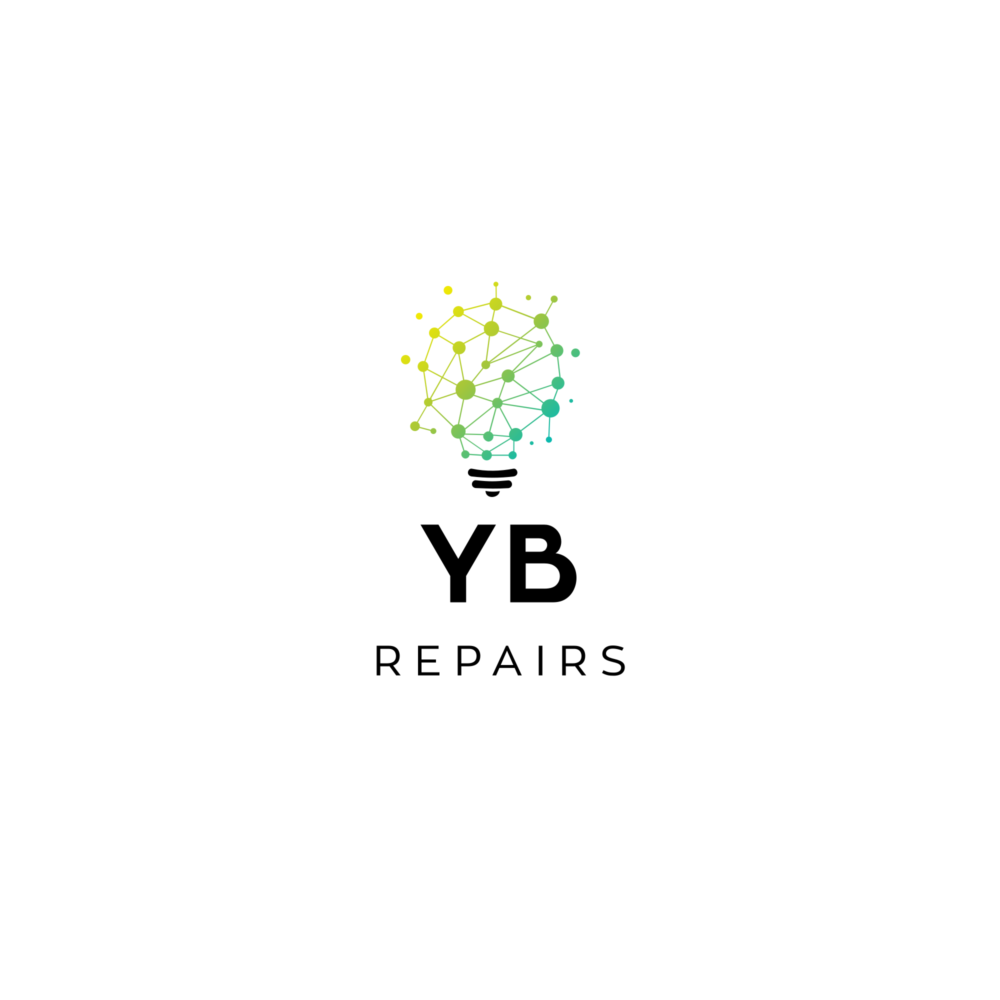

Websites op maat
Professionele websites die resultaat opleveren.

Websites & PC's
Wij bouwen professionele websites en betrouwbare pc's op maat. Van snelle reparatie tot complete setup: strak geregeld, duidelijk uitgelegd.
Professionele websites die resultaat opleveren.
Krachtige, betrouwbare pc's voor elke ondernemer.
Hoe het werkt
Je stuurt je klacht, wens of budget door. Dan kijken we wat logisch is.
Je krijgt duidelijk advies voordat er onderdelen worden besteld of vervangen.
De pc wordt netjes opgebouwd, getest en klaar gezet voor gebruik.